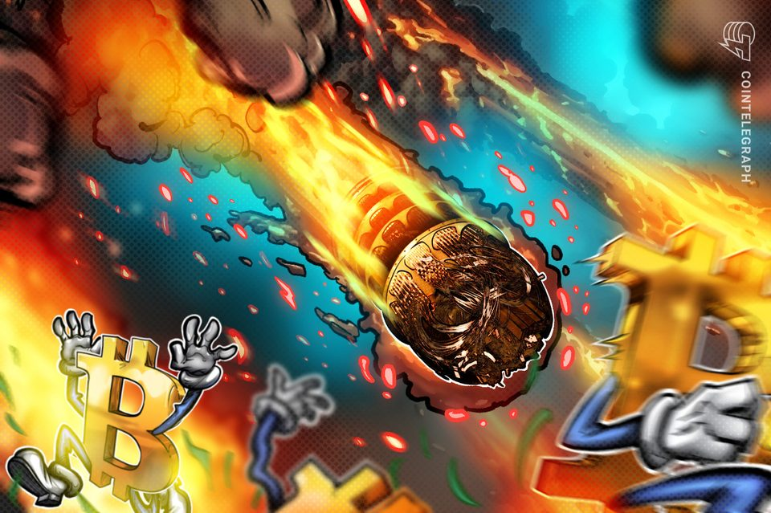
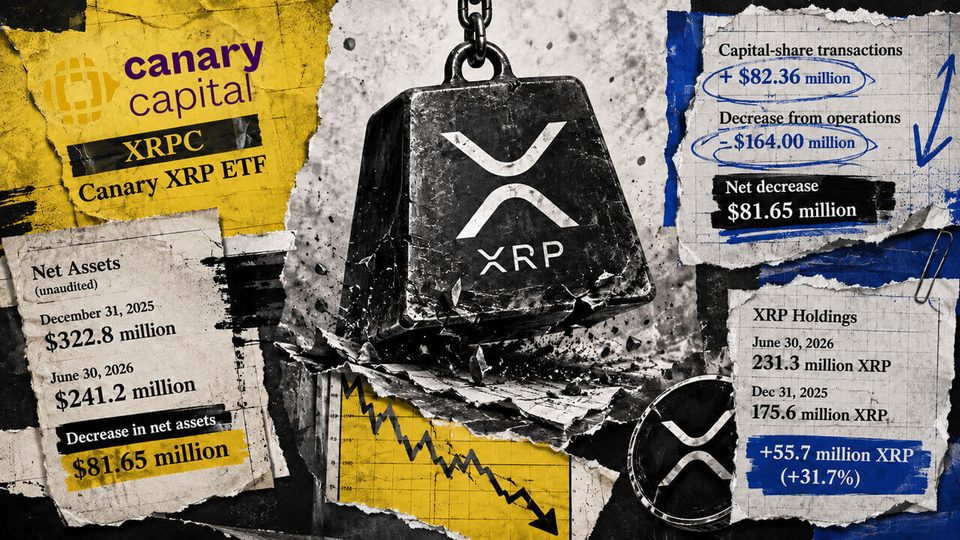
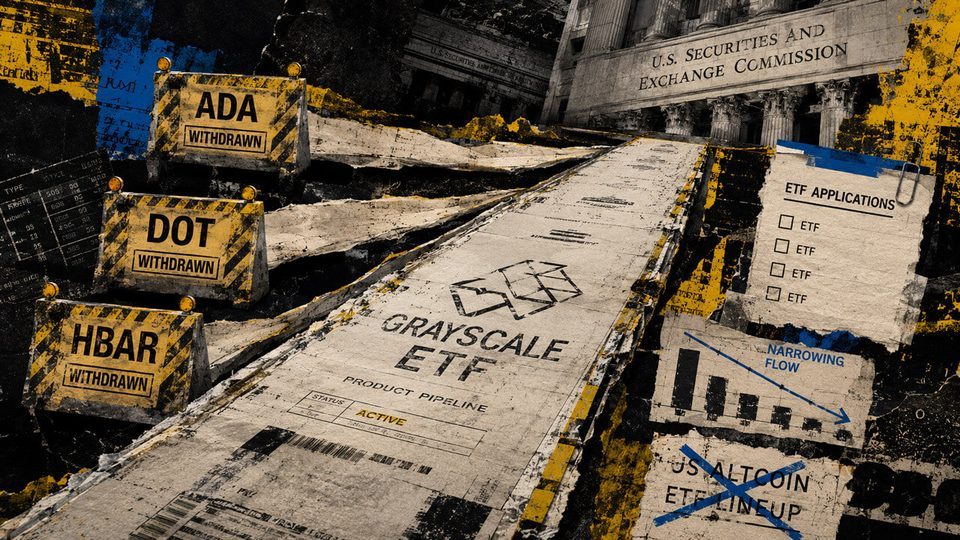
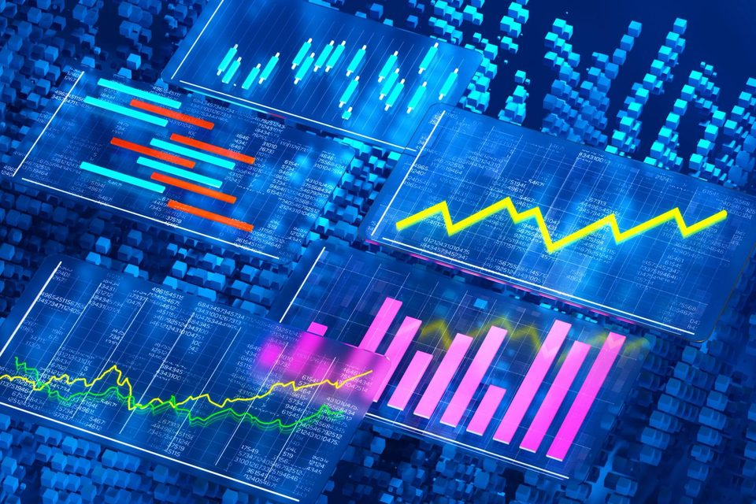
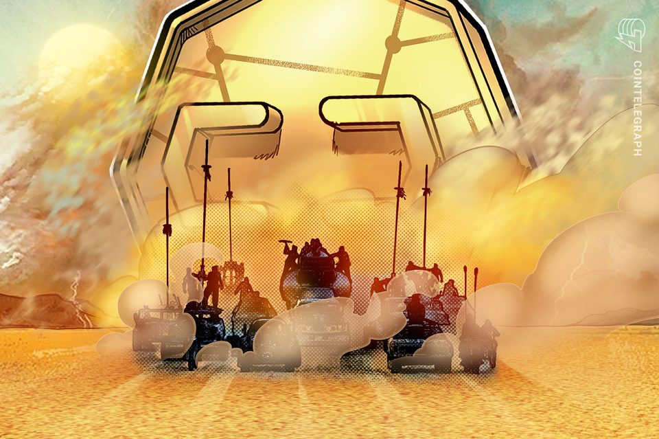
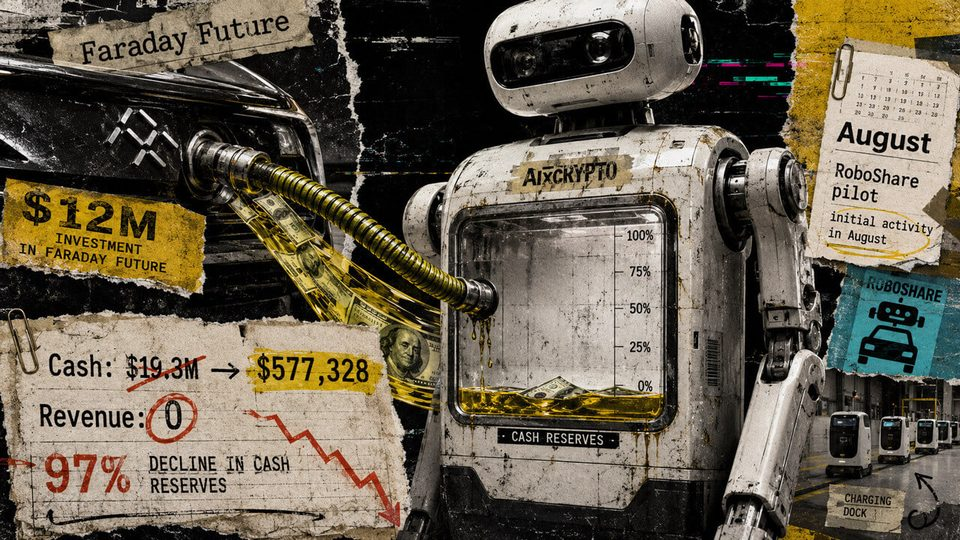

August 10, 2026
Daily headline set with source diversity, cleaned links, and local static rendering.

Crypto's first quantum attack will look like unexplained breach: Quantus founder
Bad actors with access to a cryptography-breaking quantum computer probably won’t try to announce it to the world by hacking Satoshi Nakamoto’s high-profile Bitcoin wallets, crypto executives say.

Investors poured $82 million into Canary's XRP ETF, but falling prices erased double what they put in
Unrealized XRP depreciation erased nearly twice the value added by net capital-share activity as token holdings rose 31.7%. The post Investors poured $82 million into Canary’s XRP ETF, but falling prices erased double...

Bitcoin 'Anti-Spam' Fork Sputters to a Halt After Mining Just Two Blocks
The breakaway chain drew just 2.53% of mining support, leaving its blocks hours apart and roughly 350 days from a difficulty adjustment while the main network powered ahead.
Is Clarity's delay a blessing in disguise?: State of Crypto
Is Clarity's delay a blessing in disguise?: State of Crypto
BIP-110 dies with a whimper, CLARITY vote punted: Hodler's Digest, Aug. 9
BIP-110 forks itself into oblivion with a “2-block chain” and CLARITY will finally get a Senate vote in September. The odds say that vote will be a No.

In just 190 seconds, Grayscale quietly pulled the plug on three major altcoin ETFs
Cardano, Hedera and Polkadot registration withdrawals gave no reason for the retreat, while five other Grayscale altcoin filings remained preliminary. The post In just 190 seconds, Grayscale quietly pulled the plug on...

Bitcoin Red Team Says AI Is Finding Critical Exploits Across Core Projects
A volunteer security effort says it has scanned 150 Bitcoin repositories, disclosed more than a dozen vulnerabilities, and is building an open-source AI platform to automate software security reviews.

Hyperliquid's RWA perps boom is eating into the revenue that backs HYPE
Hyperliquid's RWA perps boom is eating into the revenue that backs HYPE

Ex-US defense secretary calls CLARITY Act a ‘national security bill'
Former US Defense Secretary Mark Esper says the CLARITY Act is not merely a financial services bill, its a national security one.

A pre-revenue AI crypto startup funneled $12 million into EV as bad crypto trades erased 97% of cash in six months
The pre-revenue company ended June with $577,328 in cash while its RoboShare pilot and discounted equity facility remained conditional. The post A pre-revenue AI crypto startup funneled $12 million into EV as bad crypto...

Senate Keeps Clarity Act Alive With Crypto Bill Vote Set for September
Senate Majority Leader John Thune filed the motion to proceed early Saturday, setting up a mid-September showdown.
Bitcoin investors pour $853 million into spot ETFs. BlackRock's IBIT claims the bulk
Bitcoin investors pour $853 million into spot ETFs. BlackRock's IBIT claims the bulk